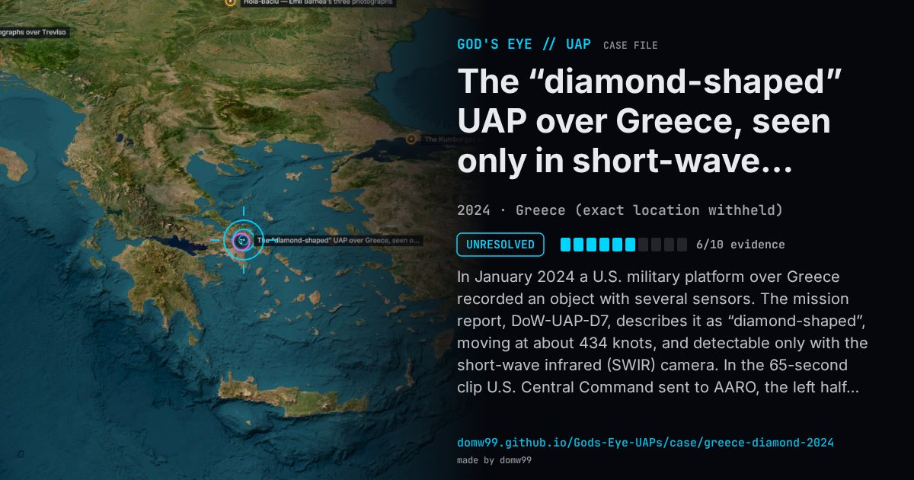

The “diamond-shaped” UAP over Greece, seen only in short-wave infrared

In January 2024 a U.S. military platform over Greece recorded an object with several sensors. The mission report, DoW-UAP-D7, describes it as “diamond-shaped”, moving at about 434 knots, and detectable only with the short-wave infrared (SWIR) camera. In the 65-second clip U.S. Central Command sent to AARO, the left half of the screen shows SWIR and the right half visible light for ten seconds; then the SWIR view fills the screen and holds an inverted teardrop with a vertical mass hanging below it near the centre, until the operator switches to visible light and loses it. It was released on DVIDS in May 2026 as DOW-UAP-PR28.
Explanation
AARO released it in May 2026 as unresolved. On the video the shape looks like an inverted teardrop with a vertical mass hanging below it, the same form as the “teardrop with a pole” filmed over the Emirates, and a description that would also fit a balloon with a payload hanging beneath it. The 434-knot speed is the observer’s estimate, and the object was lost when the operator switched to the visible-light camera.
What was seen
Shape: A “diamond-shaped” object, on video an inverted teardrop with a vertical trailing mass below
Witnesses: The crew of a U.S. military platform
Duration: About a minute of footage
Sources
Browse
- 2020s
- Unresolved
- Photo and video cases
- Official government documents
- Video footage
- Infrared or other sensor data
- Triangles and V shapes